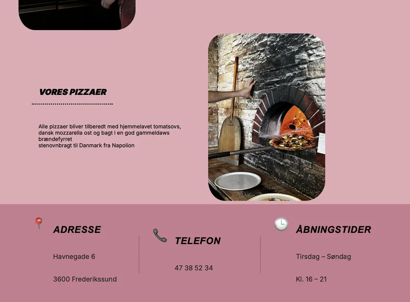
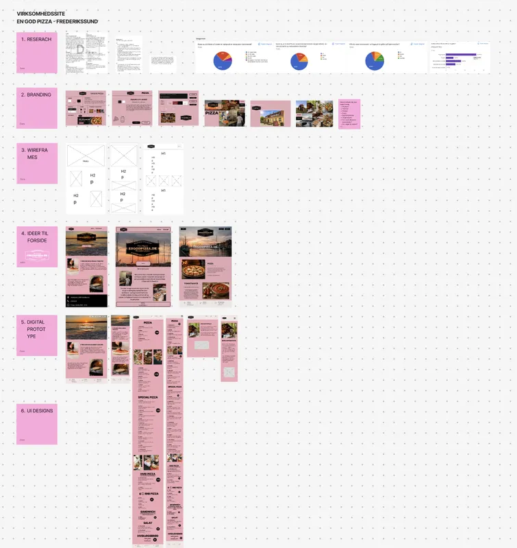

tema 5 - virksomhedsite
Dette var vores første større gruppeprojekt på uddannelsen, og samtidig første gang vi skulle samarbejde med en reel virksomhed om at redesigne deres hjemmeside. Det første skridt i processen var derfor at finde en virksomhed, der var villig til at deltage i projektet. Det viste sig faktisk at være en af de største udfordringer. Jeg syntes, det var grænseoverskridende at skulle kontakte virksomheder via både e-mail og telefon, men heldigvis stod jeg ikke alene med opgaven. At være en del af en gruppe gjorde processen langt mere overskuelig og gav en følelse af støtte.

gruppearbejde
Mine erfaringer med gruppearbejde har tidligere været meget blandede, da det ofte afhænger af gruppedynamikken og samarbejdet mellem medlemmerne. Til dette projekt var jeg dog heldig at komme i en gruppe, hvor samarbejdet fungerede godt fra starten. Vi fandt hurtigt ud af, hvilke løsninger vi var enige om, og når der opstod uenigheder, var vi gode til at lytte til hinanden og finde kompromiser. Den største udfordring for vores gruppe var arbejdet i GitHub. Vi oplevede flere tekniske problemer, og det var ofte svært at finde den nødvendige hjælp. Alligevel formåede vi at bevare roen og arbejde os gennem problemerne sammen. Jeg oplevede, at vi var gode til at støtte hinanden og dele den viden, vi hver især havde. Projektet gjorde mig også opmærksom på noget personligt omkring min rolle i gruppearbejde. Jeg har en tendens til at læne mig tilbage og lade andre træffe beslutningerne, selv når jeg selv har idéer eller forslag. Selvom det kan bidrage til en god stemning i gruppen, har jeg indset, at jeg i fremtidige projekter gerne vil blive bedre til at bidrage mere aktivt med mine egne tanker og tage mere initiativ i beslutningsprocesserne.

